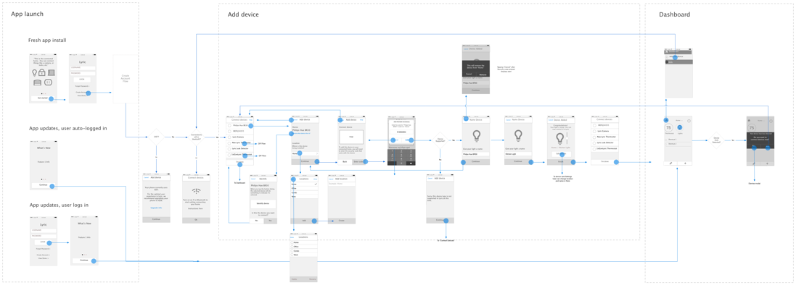
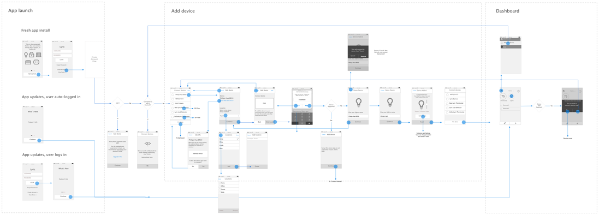

Back to Projects
Lyric App and Connected Home Platform
THE PROBLEM
Honeywell's Lyric app was built as a stand-alone thermostat app. To create extensbility to other devices, we had to design for it as a platform which would accomodate the addition of other connected home devices.
MY ROLE
Over the course of two years at Honeywell, I was the Design Lead for the Lyric app. I worked with a small team of designers, both in-house and abroad to create the interaction and visual design for the newest features of the Lyric app. I provided creative direction, managed the design work and ensured the quality of the production assets during that time. I additionally represented the team by working closely with the engineers to ensure technical feasibility and that design intent was understood.
I established a design process to integrate with the developing adoption of agile methodologies and worked to ensure that the essential step of design QA was included to ensure that what was developed matched the designs. I additionally worked with external vendors in order to lead and support various projects for new products that were coming into the app.
DESIGN TEAM LEAD FOR T5 THERMOSTAT APP INTEGRATION
With the inclusion of the new T5 thermostat into the platform, it was crucial to ensure consistency between the thermostat hardware embedded UI and the app experience. I worked with the hardware team and the Europe/Middle East/Asia teams to create consistent patterns and guidelines around naming and icon usage in order to do this.
We created a scheduling model for its different automation capabilitiies and our team received three patents for the interaction design surrounding schedule triaging and setting up geofencing in conjunction with a sleep period.

ENABLED NEW CONNECTED HOME SOLUTIONS AND INITIATIVES
Created Design Strategy for Connected Home Automation by doing iterative interaction designwhich I validated by testing interactive prototypes. The findings from the tests helped create a direction for evolution of the Lyric Platform.

HOMEKIT USER FLOWS
I created user flows and wireframes around integration of Lyric platform devices into the Homekit platform. Our design team’s contributions to work with Apple helped evolve the Homekit platform as the Lyric round thermostat was the first thermostat to use its techology.
 

VISUAL DESIGN FOR LYRIC SECURITY PANEL
I created a visual design to align Honeywell’s Wireless Security panel with the design language from the Lyric thermostat app.